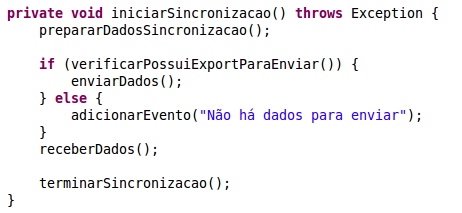
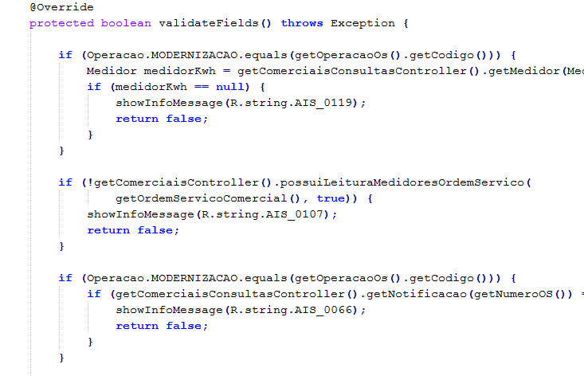
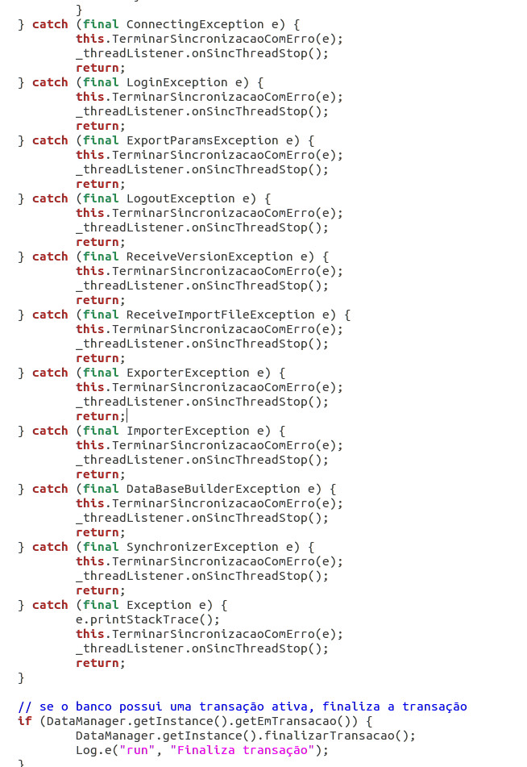

Clean Code Culture
Keep your code base maintainable
Exercício
O que você me diz desse código?

O que acha de mudarmos algumas coisas?
Que tal?
Ficou simples não é?
É disso que se trata o Clean Code!
- Legível
- Sustentável (Manutenível)
- Testável
- Elegante
Qual a situação da base de código que você está trabalhando?
Quantos 'incêndios' você precisou apagar no último ano?
Eu diria que sempre existe aquele projeto...
Como eu comecei
Imagine o caos
- Códigos macarrônicos
- Falta de documentação
- Bugs que vão e voltam
- Equipe acomodada e conformada
- Muitos 'incêndios' para apagar
Ponto de virada
Adoção do Clean Code e patterns de arquitetura adequados
Depois de alguns meses
- Média mensal de chamados reduzido
- Maior participação dos integrantes
- Equipe com mais tempo para pesquisa
- Pouquíssimos indíces de incêndios
- Equipe de testes com mais tempo para testar o business
Minha reação e da equipe
Devemos mesmo nos importar?
Boa parte do tempo passamos lendo código
- Bug fixes
- Business changes
- Melhorias
- Novas funcionalidades
Quem vai manter o código no futuro?
Como nem tudo são flores
Subjetividade
Não existe receita de bolo
- Legível
- Sustentável
- Testável
- Elegante
Devemos ter ter cautela.
Se o Clean Code é tão bom...
Porque não o vemos em ação com tanta frequência?
- Ignorância
- Teimosia
- Sindrome do tempo de vida curto
- Arrogância
- Segurar o trabalho
- Depois nós arrumamos
O que realmente compõem o Clean Code?
Conjunto de conceitos simples
Que infelizmente muita gente não coloca em prática
Conceitos
- Nomenclatura
- Princípio da Responsabilidade Única
- Redução do uso de comentários
- Testes
- Bom senso
- Cultura
Nomenclatura
- Nomes pronunciáveis
- Nomes não ambíguos
- Nomes intencionais
- Certa dificuldade para atribuir bons nomes
Nomes pronunciáveis
Atribua nomes que sejam pronunciáveis em uma conversa
Nomes não ambíguos
O que seria a variável 'valorFP'?
Valor forma pagamento?
Valor final do produto?
Nomes intencionais
- Tipagem
- Propósito
lista
- Não muito bom
- Qual é a tipagem?
- Qual o seu propósito?
listaProdutos
- Um pouco melhor
- Sabemos a tipagem
- Mas pra que ele serve?
catalogoProdutos
- Sabemos a tipagem
- Temos idéia da intenção
Agora que ja sabemos o nome
Qual padrão vamos utilizar?
- catalogoProdutos
- CatalogoProdutos
- catalogo_produtos
- _catalogoProdutos
Não importa...
Desde que toda a equipe utilize o padrão
Priorize o padrão da comunidade
Parece básico demais
E realmente é!
Mas muita gente não faz!
IU064

OK, já falamos de nomes de variáveis, mas e os métodos?
action1();
action2();
action3();
action4();
Devemos aplicar as mesmas regras!
- Nomes pronunciáveis
- Nomes não ambíguos
- Nomes intencionais
Além dos nomes...
Devemos nos preocupar com o que os nossos métodos fazem e como fazem.
Métodos curtos
- Devem caber em uma tela
- Robert C. Martin estipula métodos de 20 linhas
Reusabilidade
Com a diminuição do tamanho dos métodos você aumenta a possibilidade de reuso dos mesmos
Como reduzir o tamanho dos métodos?
- Separe os métodos em níveis diferentes
- Número de níveis pode variar
- Aplicar os conceitos DRY e SRP
Don't Repeat Yourself(DRY)
- Evite repetição, avance na abstração
- Pequenos trechos podem ser extraídos em métodos
- Código duplicado dificulta a manutenção
- Novamente, básico mas muita gente não faz!
Single Responsibility Principle(SRP)
- Faça uma coisa só
- Fuja dos God Objects
- Uma boa pista de que algo não vai bem são as SQL escritas direto na 'tela'
- Classes que manipulam muitas classes
Falando em responsabilidade...
Achou pouco? Pense em uma API...
Na qual você chama o setText e o componente mostra uma dialog após definir o texto
Comentários, precisamos mesmo deles?
//When I wrote this, only God and I understood what I was doing
//Now, God only knows
Regras básicas comentários
- Eles podem mentir, pois eles não compilam nem executam
- Não melhoram código ruim
- Pense duas vezes antes de comentar um código

Bom uso de comentários
- Descrever uma intenção ou clarear algo
- // Formato da data yyyy-MM-dd
- Avisos ou consequências
- TODO's, que devem ser temporários
- Javadoc para uma API
Comentários ruins
- Comentários óbvios
- // Default constructor
- // lista de produtos
- Journaling
- // 06/06/1666 - batman - adicionou o calculo
Conheça suas ferramentas

Resistência a mudança
Remoção do Journaling

Evite Código comentado
//private MenuProcess criarMenuCadastro() {
// MenuProcess menuCadastro = new MenuProcess();
// menuCadastro.setText(getString(R.string.atividade_menu_aceite));
// menuCadastro.setWidth(80);
// menuCadastro.setState(MenuProcess.StateMenu.PENDENTE);
// menuCadastro.setResImageIcon(R.drawable.ic_tab_aceite);
// menuCadastro.setResImageIconSelected(R.drawable.ic_tab_aceite_selected);
// menuCadastro.setSelected(true);
// return menuCadastro;
//}
- Ficará lá para sempre
- Utilize VCS para isso
Número de colunas
Não crie linhas intermináveis
Número de colunas
- 80 colunas sugerido pelo autor
- Facilita o merge
- Facilita o uso de formatação automática
- A equipe deve decidir, não somente uma pessoa
Exceptions
Como você trata os erros do seu software?
Quantas vezes você ja viu isso?

De a devida atenção as exceptions
Em geral, só faça um catch quando for realizar alguma ação ou melhorar a mensagem
Saiba como utilizar o mecanismo de tratamento de erros
Sim, todos os catchs fazem a mesma coisa
Testes
Você já escreveu algum teste que possa ser repetido automaticamente?
Testes unitários
Como seria testar um método gigante?
Todos os conceitos apresentados podem e devem ser aplicados aos testes
Exemplo de teste pequeno para um formatador de moeda

TDD
Caberia uma apresentação inteira sobre testes unitários e TDD
Você pode até não concordar com TDD
O importante é ter pelo menos testes unitários caso contrário...
Clean Code Culture
Muito mais que um checklist
Tudo isso depende...
- Equipe comprometida com a qualidade
- Cooperação
- Conversa sobre boas práticas
- Esquecer a filosofia: Beleza e Paciência
Clean Coder Rule
Sempre deixe o código mais limpo do que você o encontrou.

Com cuidado obviamente
Clean Code em projetos novos
- Comece pelos nomes
- Teste a separação de métodos
- Leia algumas páginas do Clean Code
- Teste o que aprendeu
- Discuta com outros integrantes da equipe
Clean Code em projetos antigos
Começamos onde estamos, com o que temos e fazendo o que podemos
Obrigado!
Espero ter contribuído!
Apresentação disponível em:
Referências

JeremyBytes - Clean Code: Homicidal Maniacs Read Code, Too!